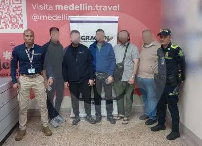

Judicial
Procuraduría indaga a funcionarios por agresión en el Parque Bolívar de Medellín
El Ministerio Público abrió una indagación preliminar contra funcionarios señalados de cometer una agresión durante un operativo de comparendo en el Parque Bolívar el 5 de abril. El caso generó debate ciudadano sobre el uso de la fuerza en operativos de movilidad y espacio público en la ciudad.
20 abr. 2026 · El Colombiano
Medio Ambiente
Lluvias e inundaciones: expertos alertan sobre límites del drenaje urbano
La expansión urbana y la impermeabilización del suelo agravan las inundaciones en Medellín. El sistema Ecodrip, desarrollado en la U. de Medellín, propone una solución con concreto permeable.
15 abr. 2026 · U. de Medellín
